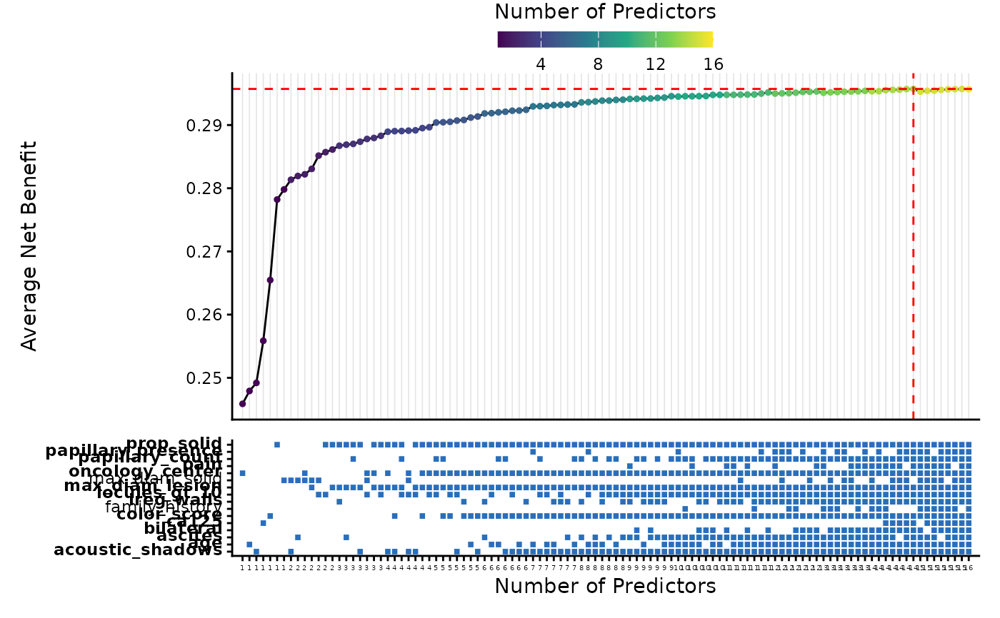
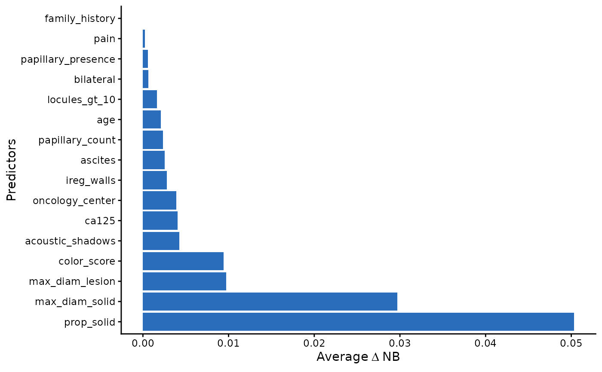

Pre-computed results from an exhaustive Net Benefit-based variable selection applied to ovarian tumour data from the International Ovarian Tumour Analysis (IOTA) consortium (phases 1–3). The dataset contains model-level summary statistics for the top 20 models per predictor count, drawn from a full exhaustive search over all 65,535 (2^16 - 1) predictor combinations.
Format
A data frame with 293 rows and 23 columns:
- Model
Comma-separated list of predictor names included in the model.
- n_Preds
Number of predictors in the model.
- AUC
Cross-validated area under the ROC curve.
- Brier
Cross-validated Brier score.
- Total_Cost
Sum of predictor group costs for the model.
- Avg_Adj_Net_Benefit
Average cost-adjusted Net Benefit across thresholds and CV folds.
- Avg_Net_Benefit
Average Net Benefit (without cost adjustment) across thresholds and CV folds.
- VIF_age, VIF_ca125, VIF_family_history, VIF_locules_gt_10, VIF_oncology_center, VIF_max_diam_lesion, VIF_papillary_count, VIF_acoustic_shadows, VIF_ascites, VIF_ireg_walls, VIF_bilateral, VIF_color_score, VIF_pain, VIF_max_diam_solid, VIF_papillary_presence, VIF_prop_solid
Permutation importance (delta Net Benefit) for each predictor.
NAwhen the predictor is not included in the model.
Source
IOTA consortium data (phases 1–3). See https://www.iotagroup.org/ for information about the IOTA studies.
Details
The original patient-level data are not publicly available. This dataset
contains only aggregated model performance metrics and can be used to
demonstrate the all_subset_plot() and VIF_plot() visualisation functions.
The analysis used 16 candidate predictors for a binary outcome (malignant vs. benign ovarian tumour) with grouped predictor costs reflecting clinical history (free), ultrasound examination (moderate cost), and blood biomarker (higher cost). Five-fold cross-validation was used with restricted cubic splines (3 knots) for continuous predictors.
The 16 candidate predictors are:
Clinical history (no cost): patient age, family history of ovarian cancer, oncology centre, pain.
Ultrasound (moderate cost): maximum lesion diameter, proportion solid, number of locules > 10, papillary count, papillary presence, acoustic shadows, ascites, irregular walls, bilateral, colour score, maximum solid diameter.
Blood biomarker (higher cost): CA-125.
This is a filtered subset (top 20 models per number of predictors, ranked by
Avg_Adj_Net_Benefit) of the full 65,535-model exhaustive search. The
attribute "best_model_stats" contains the overall best model, and
"n_total_models" records the total number of evaluated models.
Examples
data(adnex_results)
head(adnex_results)
#> Model n_Preds AUC Brier Total_Cost Avg_Adj_Net_Benefit
#> 1 max_diam_solid 1 0.8737349 0.1259806 0.005003651 0.2748026
#> 2 prop_solid 1 0.8370102 0.1438762 0.005003651 0.2732041
#> 3 color_score 1 0.8176714 0.1538772 0.005003651 0.2604622
#> 4 age 1 0.7143367 0.1936438 0.000000000 0.2479153
#> 5 oncology_center 1 0.6336334 0.2050855 0.000000000 0.2458792
#> 6 family_history 1 0.5121925 0.2190001 0.000000000 0.2442812
#> Avg_Net_Benefit VIF_age VIF_ca125 VIF_family_history VIF_locules_gt_10
#> 1 0.2798063 NA NA NA NA
#> 2 0.2782077 NA NA NA NA
#> 3 0.2654659 NA NA NA NA
#> 4 0.2479153 0.02640229 NA NA NA
#> 5 0.2458792 NA NA NA NA
#> 6 0.2442812 NA NA 0 NA
#> VIF_oncology_center VIF_max_diam_lesion VIF_papillary_count
#> 1 NA NA NA
#> 2 NA NA NA
#> 3 NA NA NA
#> 4 NA NA NA
#> 5 0.01493353 NA NA
#> 6 NA NA NA
#> VIF_acoustic_shadows VIF_ascites VIF_ireg_walls VIF_bilateral VIF_color_score
#> 1 NA NA NA NA NA
#> 2 NA NA NA NA NA
#> 3 NA NA NA NA 0.06694299
#> 4 NA NA NA NA NA
#> 5 NA NA NA NA NA
#> 6 NA NA NA NA NA
#> VIF_pain VIF_max_diam_solid VIF_papillary_presence VIF_prop_solid
#> 1 NA 0.1215026 NA NA
#> 2 NA NA NA 0.1101813
#> 3 NA NA NA NA
#> 4 NA NA NA NA
#> 5 NA NA NA NA
#> 6 NA NA NA NA
# Best model from the full search
attr(adnex_results, "best_model_stats")
#> Model
#> 1 age, locules_gt_10, oncology_center, max_diam_lesion, papillary_count, acoustic_shadows, ascites, ireg_walls, bilateral, color_score, pain, papillary_presence, prop_solid
#> n_Preds AUC Brier Total_Cost Avg_Adj_Net_Benefit Avg_Net_Benefit
#> 1 13 0.9515067 0.08049259 0.005003651 0.2903978 0.2954015
#> VIF_age VIF_ca125 VIF_family_history VIF_locules_gt_10
#> 1 0.001140494 NA NA 0.001006221
#> VIF_oncology_center VIF_max_diam_lesion VIF_papillary_count
#> 1 0.003382542 0.007831337 0.002946718
#> VIF_acoustic_shadows VIF_ascites VIF_ireg_walls VIF_bilateral VIF_color_score
#> 1 0.002918434 0.002348951 0.001820929 0.0005891669 0.007891405
#> VIF_pain VIF_max_diam_solid VIF_papillary_presence VIF_prop_solid
#> 1 0.0003957433 NA 0.0004058563 0.02911382
# Visualise
all_subset_plot(adnex_results, filter = 7, size_dot = 1)
#> Filtered to best 7 per number of predictors.

VIF_plot(adnex_results)
